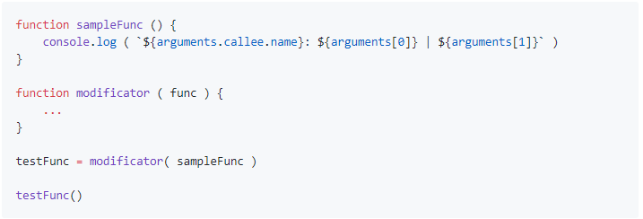
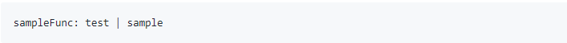
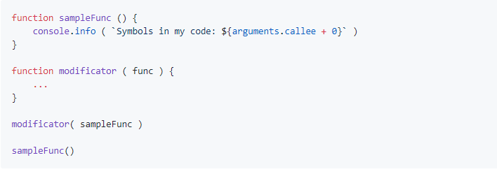
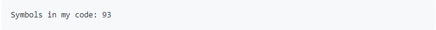
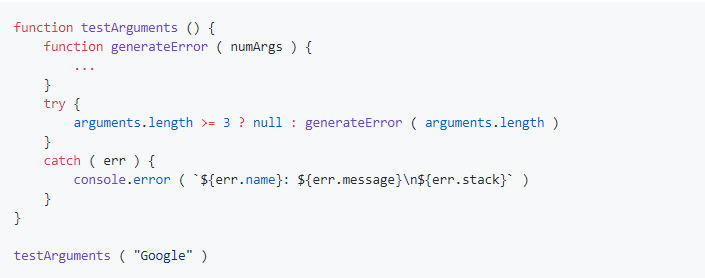
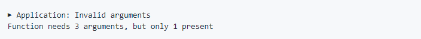

Напилить код функции modificator, такой, чтобы в результате работы кода:
в консоли было:
 click hereНапилить код функции modificator, такой, чтобы в результате работы кода:
в консоль было выведено число символов в коде функции sampleFunc, т.е.:
 click hereНапилите код функции generateError, такой, чтобы в результате работы кода:
в консоли было сообщение от ошибке:
 click here